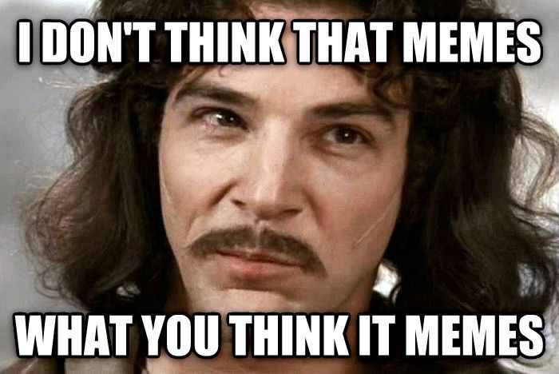

What are memes?
Memes and social media are perfect for each other.
Both concepts are about connecting with people online. While social media is a platform for communication, memes are a way of expressing a culturally-relevant idea. A meme is an image or video that represents the thoughts and feelings of a specific audience.
Most memes are captioned photos intended to elicit humor. However, there are many viral video memes too.
Memes are a worldwide social phenomenon, and an increasingly important aspect of viral marketing and social engagement. Memes often relate to existing cultures or subcultures. Often, memes spread rapidly through social media, email, and forum boards.
Why do we use them?
If you got this far, you probably understand what memes are, so the next question in line is, why do so many people use them around the world every day? Simply put, they are the internet's inside jokes. They convey a feeling of familiarity and relevance, being a part of something bigger. The cultural knowledge you gained from years of watching television and browsing social media channels has now made it possible for you to understand and enjoy this joke. That's the secret ingredient that turns memes from regular jokes to viral material.
There are few more reasons why memes are one of the go-to moves of the average social media user:
- They are eye-catching.
- They enable you to express complex ideas through a simple concept by relying on the meme context, origin and common use.
- They have a viral potential.
- They push you to paint your creative thoughts in more humorous colors.
- They are easy to create and are just too much fun!